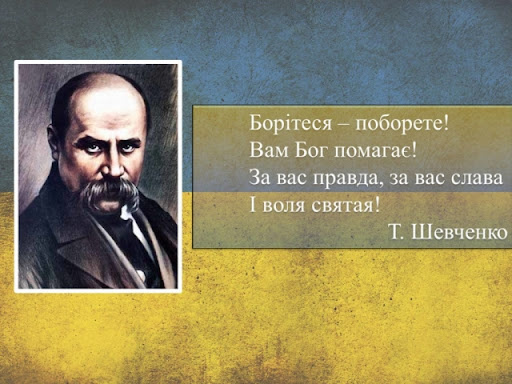
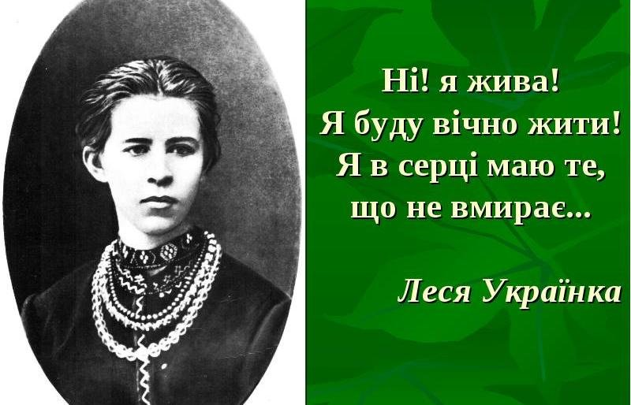
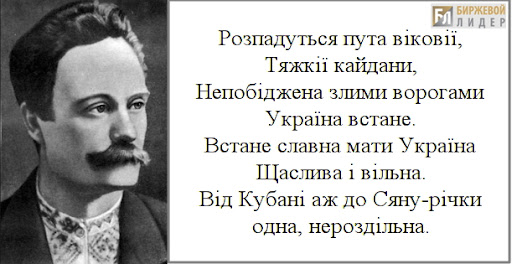
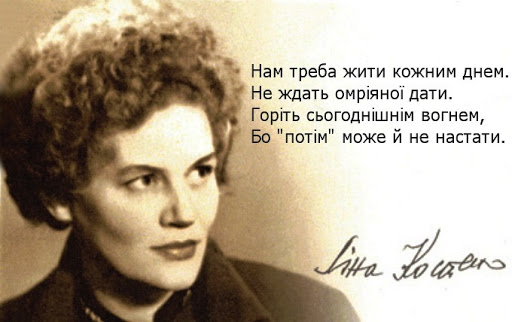
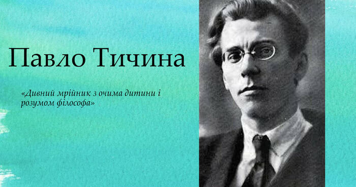
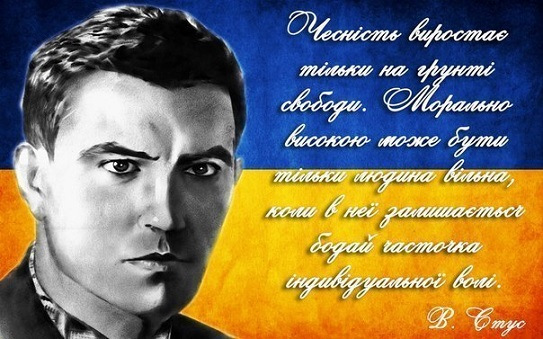
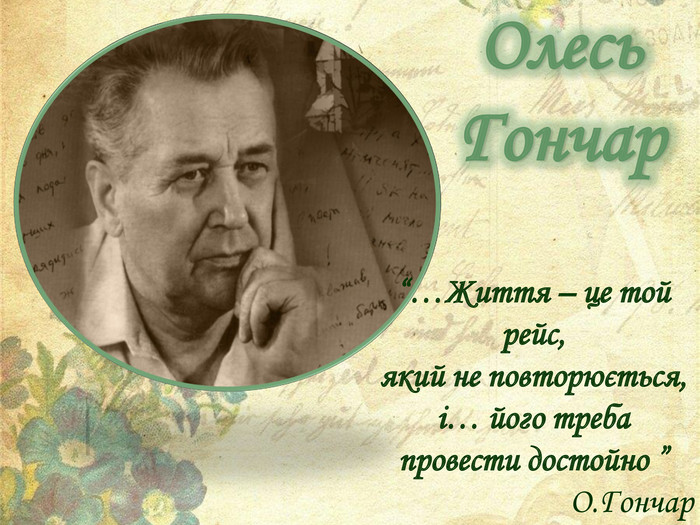

Відомі українські письменники минулого і сучасності (19, 20, 21 століття) боролися за рідну мову, за літературу, і саме через любов до творчості, через патріотизм страждали. Вони зробили великий крок у розвитку української культури та українського слова.
Тарас Григорович Шевченко
(9 березня 1814 – 10 березня 1861)
Шевченко — український поет, письменник (драматург,прозаїк), художник (живописець, гравер), громадський та політичний діяч. Тарас Шевченко був яскравим прибічником української літератури та української мови, був патріотом своєї держави, за що й страждав: декілька раз арештований, відбував термін у засланні тощо. Член Кирило-Мефодіївського братства. Академік Імператорської академії мистецтв (1860). До ранньої творчості Шевченка належать балади «Причинна» (1837), «Тополя» (1839) й «Утоплена» (1841). На засланні поет почав свою творчість поезією «Думи мої, думи мої» (1847) Наприкінці життя Шевченко почав перекладати «Слово о полку Ігоревім» (1860).
Леся Українка
(справжнє ім’я: Лариса Петрівна Косач-Квітка; 1871-1913)
Леся Українка — українська письменниця, перекладач, культурний діяч. Творчості поетеси притаманні такі жанри, як: поезія, лірика, епос, драма, проза тощо. Також працювала в ділянці фольклористики (220 народних мелодій записано з її голосу) і брала активну участь в українському національному русі. Відома завдяки своїм збіркам поезій «На крилах пісень» (1893), «Думи і мрії» (1899), «Відгуки» (1902), поем «Давня казка» (1893), «Одно слово» (1903), драм «Бояриня» (1913), «Кассандра» (1903–1907), «В катакомбах» (1905), драма-феєрія «Лісова пісня» (1911) та ін.
Іван Якович Франко
(1856-1916)
Франко – український письменник, поет, публіцист, перекладач, вчений, громадський і політичний діяч. Доктор філософії (1893 р.), дійсний член наукового товариства ім. Т.Г. Шевченка (1899 р.), почесний доктор Харківського університету (1906 р.) Франко був надзвичайно працьовитим, тому виявив себе на багатьох ділянках української культури. Новаторською для публіки була збірка поезії «З вершин і низин» (1887). Проза Франка охоплює понад 100 оповідань, новел, 10 повістей, романів. Вершиною прози Франка є соціальний роман «Борислав сміється» (1882) У драматургії Франко виявив себе майстром соціально-психологічної та історичної драми й комедії «Сон князя Святослава» (1895).
Ліна Василівна Костенко
(19 березня 1930)
Ліна Костенко — українська письменниця-шістдесятниця. Лауреат Шевченківської премії (1987), Премії Антоновичів (1989), премії Петрарки (1994). Брала активну участь у дисидентському русі, за радянського часу, через це була надовго виключена з літературного процесу. Авторка поетичних збірок «Над берегами вічної ріки» (1977), «Неповторність» (1980), «Сад нетанучих скульптур» (1987), роману у віршах «Маруся Чурай» (1979, Шевченківська премія 1987), поеми «Берестечко» (1999, 2010). 2010 року опублікувала перший прозовий роман «Записки українського самашедшого», що став одним з лідерів продажу серед українських книжок у 2011 році. Почесний професор Києво-Могилянської академії, почесний доктор Львівського та Чернівецького університетів.
Павло Григорович Тичина
(1891-1967)
Тичина – український поет, перекладач, публіцист, громадський діяч. Новатор поетичної форми. Директор Інституту літератури АН УРСР (1936–1939, 1941–1943). Член-кореспондент Болгарської академії наук (1947). Лауреат Сталінської премії (1941). Лауреат Шевченківської премії (1962). У 1912 році в журналі «Літературно-науковий вісник» вперше надрукували твір Тичини, це був вірш «Ви знаєте як липа шелестить». Тичина видав низку поетичних збірок і за повоєнного часу: «Могутність нам дана» (1953), «Зростай, пречудовий світе» (1960), «Комунізму далі видні» (1961) тощо. Автор слів Гімну Української РСР.
Василь Семенович Стус
(1938 — 1985)
Стус — український поет, перекладач, прозаїк, літературознавець, правозахисник. Один із найактивніших представників українського культурного руху шістдесятників. Лауреат Державної премії ім. Т. Шевченка (1990), Герой України (2005). Письменник був прибічником того, що українська культура має зберігатися та розвиватися, за що зазнав репресій з боку радянської влади, його творчість була заборонена, а він сам був засуджений до тривалого перебування в місцях позбавлення волі, де й загинув. Його перу належать збірки віршів, такі як: «Круговерть» (1965), «Зимові дерева» (1970), «Веселий цвинтар» (1971)
Олесь Терентійович Гончар
(1918-1995)
Олесь Гончар – український радянський письменник, літературний критик, громадський діяч. Лауреат Сталінської премії (1948), перший лауреат премії імені Тараса Шевченка (9 березня 1962), голова Спілки письменників України (1959–1971), академік НАН України (1978). В кінці 40-х і на початку 50-х років він пише низку новел («Модри Камень», «Весна за Моравою», «Ілонка», «Гори співають» тощо) Роман «Собор» був опублікований у журналі «Вітчизна» у 1968 році. Перші рецензії на роман були схвальні, але невдовзі критика заборонила, і твір було вилучено з літературного процесу на два десятиліття.